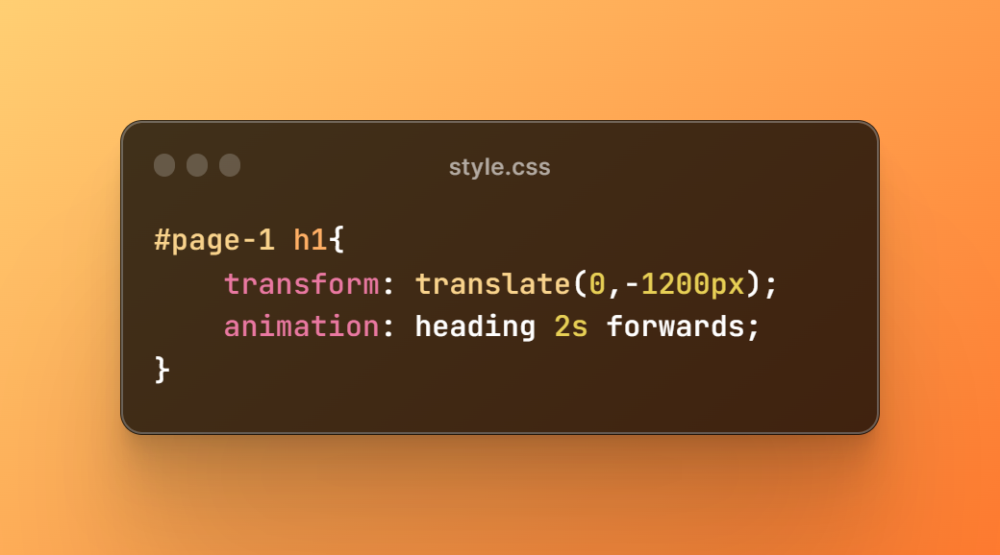

welcome to my mini project :)
so in this project , I've used basic Animation properties by using transform property and keyframes . in the next pages I've written some of them with values
also you can see the whole code in here: Github link
transform property
we should first hide the element we want to be animated . so to do that we use transform property for that element. note that it's common to use at least 1200px in Y-axis or more than that in X-axis , to make sure part of the words not appear on the screen

adding Animation property
This property is a shorthand for about 8 properties . but i used the 3 of them here . and that's works for ther regular use . so the "heading" is the "Animation Name" , the 2s is the "Animation duration" and the "Forwards" is the "Animation-timing-function"

so now with @keyframes (Animation Name) {} we have to specify the transform which lead us to the origin point of element to get it back